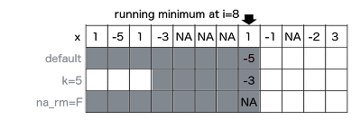
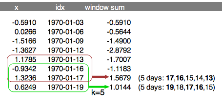
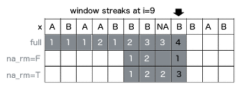
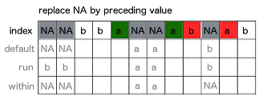
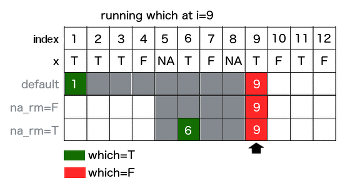

While runner::runner can apply any R function, built-in
functions provide C++ implementations of common operations that are
orders of magnitude faster. All built-in functions accept the same
k, lag, idx, at, and
na_pad arguments as runner. See
vignette("getting_started_with_runner") for an introduction
to these parameters.
min_run, max_run, sum_run,
mean_run
These compute running minimum, maximum, sum, and mean respectively.
By default (na_rm = TRUE), NA values are
ignored. The default window is cumulative (equivalent to
cummin, cummax, etc.), but k
restricts it to a fixed size.
The diagram below shows min_run at i=8 with three
configurations:

library(runner)
x <- c(1, -5, 1, -3, NA, NA, NA, 1, -1, NA, -2, 3)
data.frame(
x,
default = min_run(x, na_rm = TRUE),
k_5 = min_run(x, k = 5, na_rm = TRUE),
narm_f = min_run(x, na_rm = FALSE)
)## x default k_5 narm_f
## 1 1 1 1 1
## 2 -5 -5 -5 -5
## 3 1 -5 -5 -5
## 4 -3 -5 -5 -5
## 5 NA -5 -5 NA
## 6 NA -5 -5 NA
## 7 NA -5 -3 NA
## 8 1 -5 -3 NA
## 9 -1 -5 -1 NA
## 10 NA -5 -1 NA
## 11 -2 -5 -2 NA
## 12 3 -5 -2 NAidx for time-based windows
When data points are not equally spaced, set idx so that
k refers to index distance rather than element count. In
the example below, a 5-day sum window spans different numbers of
elements depending on date spacing:

x <- c(-0.5910, 0.0266, -1.5166, -1.3627, 1.1785, -0.9342, 1.3236, 0.6249)
idx <- as.Date(c(
"1970-01-03", "1970-01-06", "1970-01-09", "1970-01-12",
"1970-01-13", "1970-01-16", "1970-01-17", "1970-01-19"
))
sum_run(x, k = 5, idx = idx)## [1] -0.5910 -0.5644 -1.4900 -2.8793 -1.7008 -1.1184 1.5679 1.0143The lag argument shifts the window by index distance (or
by element count if idx is not set):
sum_run(x, k = 5, lag = 2, idx = idx)## [1] NA -0.5910 -0.5644 -1.4900 -1.5166 -0.1842 -0.1842 1.5679streak_run
Counts consecutive identical values within each window. The
na_rm argument controls how NA is handled —
when na_rm = FALSE, NA resets the streak; when
na_rm = TRUE, NA is skipped and the streak
continues through it.

x <- c("A", "B", "A", "A", "B", "B", "B", NA, "B", "B", "A", "B")
data.frame(
x,
s0 = streak_run(x),
s1 = streak_run(x, k = 4, na_rm = FALSE),
s2 = streak_run(x, k = 4)
)## x s0 s1 s2
## 1 A 1 1 1
## 2 B 1 1 1
## 3 A 1 1 1
## 4 A 2 2 2
## 5 B 1 1 1
## 6 B 2 2 2
## 7 B 3 3 3
## 8 <NA> 3 NA 3
## 9 B 4 NA 3
## 10 B 5 NA 3
## 11 A 1 1 1
## 12 B 1 1 1Streaks work with idx too — for example, counting
consecutive wins in a 5-day period:
x <- c("W", "W", "L", "L", "L", "W", "L", "L")
idx <- as.Date(c(
"2019-01-03", "2019-01-06", "2019-01-09", "2019-01-12",
"2019-01-13", "2019-01-16", "2019-01-17", "2019-01-19"
))
data.frame(
idx, x,
streak_5d = streak_run(x, k = 5, idx = idx),
streak_5d_lag = streak_run(x, k = 5, lag = 1, idx = idx)
)## idx x streak_5d streak_5d_lag
## 1 2019-01-03 W 1 NA
## 2 2019-01-06 W 2 1
## 3 2019-01-09 L 1 1
## 4 2019-01-12 L 2 1
## 5 2019-01-13 L 3 2
## 6 2019-01-16 W 1 2
## 7 2019-01-17 L 1 1
## 8 2019-01-19 L 2 1lag_run
Like stats::lag, but supports index-based lag via
idx. When idx is set, the lag refers to index
distance — so lag = 3 with a date index means “the value 3
days ago”, not “the value 3 positions ago”:
x <- c(-0.5910, 0.0266, -1.5166, -1.3627, 1.1785, -0.9342, 1.3236, 0.6249)
idx <- as.Date(c(
"1970-01-03", "1970-01-06", "1970-01-09", "1970-01-12",
"1970-01-13", "1970-01-16", "1970-01-17", "1970-01-19"
))
lag_run(x, lag = 3, idx = idx)## [1] NA -0.5910 0.0266 -1.5166 NA 1.1785 NA -0.9342fill_run
Replaces NA values with the preceding non-NA value. Two
options modify the default behavior:
run_for_first = TRUE — fills leading NAs
(at the start of the vector) with the first non-NA value found after
them.only_within = TRUE — only fills NAs that
are surrounded by the same value on both sides
(e.g. "a", NA, "a" becomes "a", "a", "a", but
"a", NA, "b" stays unchanged).
x <- c(NA, NA, "b", "b", "a", NA, NA, "a", "b", NA, "a", "b")
data.frame(x,
f1 = fill_run(x),
f2 = fill_run(x, run_for_first = TRUE),
f3 = fill_run(x, only_within = TRUE)
)## x f1 f2 f3
## 1 <NA> <NA> b <NA>
## 2 <NA> <NA> b <NA>
## 3 b b b b
## 4 b b b b
## 5 a a a a
## 6 <NA> a a a
## 7 <NA> a a a
## 8 a a a a
## 9 b b b b
## 10 <NA> b b <NA>
## 11 a a a a
## 12 b b b bwhich_run
Returns the index of the first or last TRUE value in
each window, controlled by which = "first" or
which = "last". When na_rm = FALSE, an
NA in the window before a TRUE makes the
result NA (because the missing value could have been
TRUE).

x <- c(T, T, T, F, NA, T, F, NA, T, F, T, F)
data.frame(
x,
s0 = which_run(x, which = "first"),
s1 = which_run(x, na_rm = FALSE, k = 5, which = "first"),
s2 = which_run(x, k = 5, which = "last")
)## x s0 s1 s2
## 1 TRUE 1 1 1
## 2 TRUE 1 1 2
## 3 TRUE 1 1 3
## 4 FALSE 1 1 3
## 5 NA 1 1 3
## 6 TRUE 1 2 6
## 7 FALSE 1 3 6
## 8 NA 1 NA 6
## 9 TRUE 1 NA 9
## 10 FALSE 1 6 9
## 11 TRUE 1 NA 11
## 12 FALSE 1 NA 11